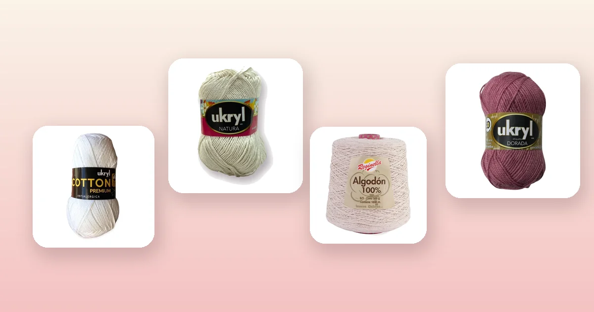

Proyectos de crochet
Cómo tejer una falda a crochet paso a paso
La falda a crochet es una prenda versátil que puedes llevar en verano con una blusa fresca o en entretiempo con medias y botas. Se teje de arriba hacia abajo, empezando por la pretina y ensanchando con aumentos hasta la cadera. En esta guía tienes la tabla de medidas por talla, el paso a paso completo de la construcción, cuántos ovillos comprar y qué hilo elegir para que la caída sea perfecta.

Qué es una falda a crochet y por qué tejerla
Una falda a crochet es una prenda tejida con ganchillo que se construye normalmente de arriba hacia abajo: empiezas por la cintura, distribuyes aumentos hasta la cadera y luego tejes recto hasta el largo que prefieras. El resultado es una pieza ligera, con textura y completamente personalizable en largo, color y punto.
A diferencia de un suéter o un chaleco, la falda no lleva sisas, hombros ni ajuste de cuello, lo que la convierte en un proyecto intermedio muy accesible. Si ya dominas el punto alto y el punto bajo, tienes todo lo necesario para empezar. Y si ya tejiste un crop top a crochet o un vestido a crochet, la falda te resultará incluso más directa: es la mitad inferior de un vestido, sin la parte del cuerpo superior.
Además, la falda a crochet se presta para lucir puntos decorativos como el punto abanico, el punto V o el punto piña, que crean calados bonitos y dan ligereza a la prenda. Es una oportunidad perfecta para experimentar con texturas sin comprometer la estructura.
Materiales e hilos recomendados
El secreto de una buena falda a crochet está en el hilo: necesitas un material con caída y estructura, que no se deforme con el peso de la prenda ni se estire al caminar. El algodón es el favorito por excelencia, ya que da un tejido fresco, lavable y con el peso justo para que la falda caiga natural.
- Ganchillo acorde al hilo: 3 a 4 mm para hilos finos de algodón, 4 a 5 mm para hilos de grosor medio. Consulta nuestra guía de qué aguja o ganchillo usar para tejer si tienes dudas.
- Aguja lanera, tijeras, cinta métrica y marcadores de punto.
- Elástico plano de 2,5 cm (opcional, para reforzar la pretina).
Estas son las mejores opciones del catálogo para una falda con caída profesional:
- Hilo de algodón 100%, ideal para faldas de verano: Hilo de Algodón Blanco, Hilo de Algodón Arena, Hilo de Algodón Celeste o Hilo de Algodón Negro, con 200 m por ovillo de 100 g. El algodón da un tejido fresco, con peso suficiente para la caída y que no pica nada.
- Hilo de mezcla suave: Ukryl Natura Crudo o Ukryl Natura Arena, con 250 m por ovillo. Su mezcla de fibras le da una suavidad extra y un metraje generoso que rinde más. Revisa toda la línea en Ukryl.
- Cono de algodón, para faldas largas sin empalmes: Cono de Algodón Crudo o Cono de Algodón Negro, con 400 m por cono de 200 g. Al tener más metraje continuo, reduces los empalmes y el tejido queda más parejo. Disponibles en Reginella.
- Para una falda de entretiempo con más cuerpo: Lana Ukryl 24/7 Nude o Lana Ukryl 24/7 Beige, con 150 m por ovillo. Queda un tejido más grueso, abrigado y con estructura, perfecto para una falda recta de otoño.
- Para una falda con textura especial: Lana Ukryl Etiqueta Dorada Palo Rosa o Lana Ukryl Etiqueta Dorada Camel, con 170 m por ovillo y un acabado satinado que da un toque elegante.
Tabla de medidas por talla
Para una falda necesitas tres medidas clave: contorno de cintura, contorno de cadera y largo deseado (desde la cintura hasta donde quieras que termine). La diferencia entre cintura y cadera define cuántos aumentos necesitas en la zona de transición.
| Talla | Cintura (cm) | Cadera (cm) | Largo mini | Largo midi | Largo maxi |
|---|---|---|---|---|---|
| S | 64 - 68 | 88 - 92 | 40 cm | 60 cm | 85 cm |
| M | 68 - 74 | 92 - 98 | 42 cm | 65 cm | 90 cm |
| L | 74 - 80 | 98 - 104 | 44 cm | 68 cm | 92 cm |
| XL | 80 - 88 | 104 - 112 | 46 cm | 70 cm | 95 cm |
Siempre tómate las medidas sobre la ropa interior, sin apretar la cinta. Si estás entre dos tallas, elige la más grande: es más fácil ajustar una pretina ancha que estirar una apretada.
La muestra de tensión
La muestra es imprescindible en una falda porque un error de pocos puntos se multiplica por todo el contorno. Teje un cuadrado de 12 × 12 cm con tu hilo y ganchillo, mide al centro cuántos puntos caben en 10 cm y cuántas vueltas hay en 10 cm. Si nunca has hecho una muestra, en la guía de cuánta lana necesito para tejer está el procedimiento completo.
| Dato | Valor |
|---|---|
| Puntos en 10 cm | 16 (punto alto, ganchillo 3,5 mm) |
| Contorno de cintura | 71 cm |
| Cálculo cintura | 16 ÷ 10 × 71 = 114 puntos |
| Contorno de cadera | 95 cm |
| Cálculo cadera | 16 ÷ 10 × 95 = 152 puntos |
| Aumentos necesarios | 152 − 114 = 38 puntos |
Paso 1: teje la pretina o cinturilla
La pretina es la base de toda la falda y debe quedar firme para sostener el peso del tejido sin ceder. Se trabaja en punto bajo, que es más compacto y elástico que el punto alto.
- Haz una cadena base igual al contorno de cintura calculado (en nuestro ejemplo, 114 cadenas). Verifica que no esté torcida y cierra en anillo con un punto raso.
- Teje entre 5 y 8 vueltas de punto bajo en redondo, sin aumentar ni disminuir. Esto genera una banda de 3 a 4 cm de alto.
- Si quieres insertar un elástico, teje la pretina el doble de alto (10 a 16 vueltas), dóblala hacia adentro y cose el borde, dejando una abertura para pasar el elástico.
Paso 2: cuerpo con aumentos hasta la cadera
Aquí es donde la falda empieza a tomar forma. Cambias de punto bajo a punto alto (que da más caída) y distribuyes aumentos gradualmente para pasar de la medida de cintura a la de cadera.
- Calcula cuántos aumentos necesitas: en nuestro ejemplo, 38 puntos. Distribúyelos en 4 a 8 vueltas para que la transición sea suave, no abrupta.
- Primera vuelta de transición: teje 3 cadenas al aire (cuenta como punto alto), luego alterna puntos altos normales con aumentos (2 puntos altos en un mismo punto). Distribuye los aumentos de forma pareja: si necesitas 10 aumentos en esta vuelta y tienes 114 puntos, haz un aumento cada 11 puntos aproximadamente.
- Siguientes vueltas: repite el patrón intercalando una vuelta sin aumentos entre las vueltas con aumentos. Esto evita que la tela se frunza o se abombe.
- Verifica la medida: al terminar las vueltas de aumento, mide el contorno y compáralo con tu medida de cadera. Si falta, agrega otra vuelta con aumentos. Si sobra, descose y reduce.
Para una falda tipo A-line con más vuelo, continúa haciendo pequeños aumentos (4 a 6 por vuelta) incluso después de alcanzar la medida de cadera. Para una falda recta, detén los aumentos una vez igualada la cadera.
Paso 3: teje recto hasta el largo deseado
Una vez que la falda tiene el contorno de cadera completo, tejes recto en punto alto sin aumentos ni disminuciones. Vuelta tras vuelta, la falda va creciendo en largo hasta alcanzar la medida que quieras.
- Minifalda: 40 a 46 cm de largo total (incluyendo la pretina). Es la más rápida y usa menos hilo.
- Falda midi: 60 a 70 cm. El largo más versátil, queda por debajo de la rodilla y se puede usar en muchas ocasiones.
- Falda maxi: 85 a 95 cm o más. Llega al tobillo y consume bastante más hilo, pero el resultado es espectacular para verano con sandalias.
Mide el largo probándote la falda cada 10 vueltas. El peso del tejido puede hacer que una falda en el ganchillo se vea más corta de lo que realmente cae cuando la usas puesta.
Paso 4: borde del ruedo y terminación
El borde inferior (ruedo) le da la terminación profesional a la falda y evita que se enrolle.
- Ruedo sencillo: teje 2 vueltas de punto bajo por todo el borde inferior. Esto compacta el borde y lo deja parejo.
- Ruedo decorativo: después de las 2 vueltas de punto bajo, agrega una vuelta de punto picot (3 cadenas + punto raso cada 3 puntos) para un borde ondulado y femenino.
- Remata todas las hebras con la aguja lanera, entretejiéndolas por el revés del tejido para que no se vean.
- Bloqueo: lava la falda a mano con agua fría, escúrrela suavemente y extiéndela sobre una toalla dándole la forma deseada. Deja secar en plano. Si quieres que puedes aprender más sobre el cuidado de las prendas, mira nuestra guía de cómo lavar y cuidar la lana.
Cuántos ovillos necesitas según el hilo
Las cantidades son para una falda midi (65 cm) talla M en punto alto, con un margen del 15% ya incluido. Para una minifalda, reduce un 35%. Para una falda maxi, suma un 40%.
| Hilo | Grosor | Metros por ovillo | Talla S | Talla M | Talla L | Talla XL |
|---|---|---|---|---|---|---|
| Hilo de Algodón | Fino | 200 m | 4 | 5 | 6 | 7 |
| Ukryl Natura | Fino | 250 m | 3 | 4 | 5 | 5 |
| Cono de Algodón | Fino | 400 m | 2 | 2 | 3 | 3 |
| Ukryl 24/7 | Medio | 150 m | 5 | 6 | 7 | 8 |
| Ukryl Etiqueta Dorada | Medio | 170 m | 4 | 5 | 6 | 7 |
Si quieres afinar tu cálculo, usa la fórmula de la guía de cuánta lana necesito para tejer. Y si quieres entender mejor las diferencias entre hilos, revisa la guía de tipos de lana para tejer.
Variaciones de la falda a crochet
- Falda recta o tubo: no lleva aumentos después de la cadera. Queda ajustada y es ideal para looks formales. Elige un hilo con algo de elasticidad como el Ukryl Natura Arena para que se adapte al movimiento.
- Falda A-line o evasé: sigue sumando pequeños aumentos después de la cadera (4 a 6 por vuelta, cada 3 o 4 vueltas). El resultado es una falda con vuelo que se ensancha gradualmente hacia el ruedo.
- Minifalda: la versión más rápida. Con 40 cm de largo y un hilo como Hilo de Algodón Celeste, puedes terminarla en un fin de semana.
- Falda midi: el largo más popular, entre la rodilla y la pantorrilla. Con Hilo de Algodón Blanco o Hilo de Algodón Negro queda impecable para cualquier ocasión.
- Falda maxi: llega al tobillo y es espectacular en verano con una blusa corta. Usa un Cono de Algodón Crudo para minimizar empalmes en una prenda tan larga.
- Falda con calados: sustituye el punto alto del cuerpo por punto abanico o punto V para crear una falda con transparencias controladas, perfecta como pareo de playa. Puedes aprender los puntos base en nuestra guía de puntos básicos de crochet.
- Falda con flores aplicadas: teje la falda en un color neutro y aplica flores a crochet cosidas como decoración, en el ruedo o en la pretina.
Errores comunes al tejer una falda
- No hacer la muestra de tensión. Una falda que queda grande o chica es frustrante, y en prendas circulares no hay costura que ajustar. La muestra te ahorra deshacer y volver a empezar.
- Aumentos mal distribuidos. Si concentras los aumentos en un solo lado, la falda se deforma. Distribúyelos de forma pareja en toda la vuelta, cambiando la posición del primer aumento en cada vuelta para que no formen una línea visible.
- Pretina floja. Si la pretina no sostiene, la falda se cae. Teje la pretina en punto bajo y un ganchillo un número menor al del cuerpo, o inserta un elástico.
- Elegir un hilo que se estira. La lana pura o los hilos muy elásticos se deforman con el peso. Prefiere algodón 100% o mezclas con buena recuperación.
- No medir mientras tejes. Pruébate la falda cada 10 vueltas. El peso hace que la prenda se alargue cuando la usas puesta, y podrías terminar con una falda más larga de lo esperado.
- Saltarse el bloqueo. El bloqueo empareja el tejido, fija las medidas y da la caída definitiva. Es especialmente importante en faldas de algodón.